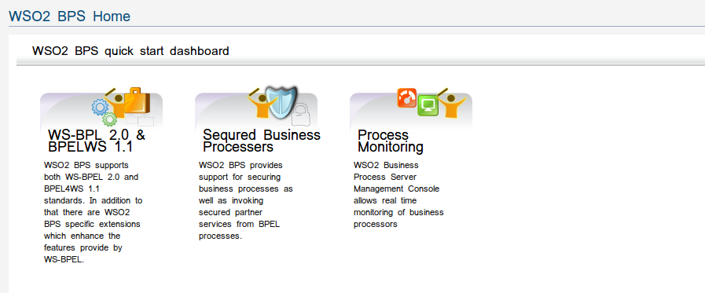

The WSO2 Business Process Server is an easy-to-use open source business process server that executes business processes written using the WS-BPEL standard. Powered by Apache ODE, it provides a complete Web-based graphical console to deploy, manage and view processes in addition to managing and viewing process instances.
Figure1: Cloud Business Process Server Home Page
WSO2 BPS supports both WS-BPEL 2.0 and BPEL4WS 1.1 standards. In addition to that there are WSO2 BPS specific extensions which enhance the features provide by WS-BPEL.
WSO2 BPS provides support for securing business processes as well as invoking secured partner services from BPEL processes
WSO2 Business Process Server Management Console allows real time monitoring of business processes.